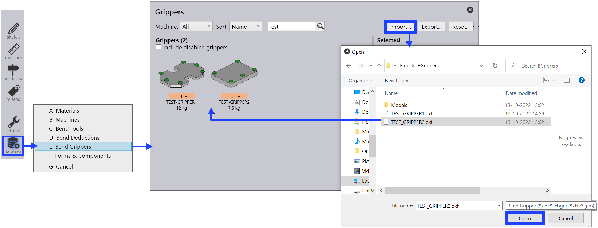
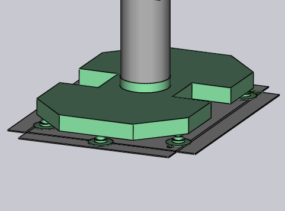

Tuo tarttuja DXF:stä
BendMaster-koneiden tyhjiöimutar ttuja voidaan tuoda DXF-tiedostosta. DXF-tiedosto edustaa tarttujan yläpuolelta kuvattua näkymää (yläpuolelta tarkoittaa imukupeista, EI BendMasterista). POLYLINE-yksiköt DXF-tiedostossa määrittävät tarttujalevyn muodon ja TEXT-yksiköt tarjoavat lisätietoja tarttujasta (kuten sen nimen, paksuuden ja imukuppien sijoittelun).
Tiedostot vaaditunmuodossa (DXF, ARV tai GEO) voidaan tuoda Taivutustietokantaan.
Tarttujan tuominen:
-
Avaa Database TecZone Bend:n sisällä.
-
Valitse Bend Grippers -vaihtoehto luettelosta.
-
Napsauta Import…-vaihtoehtoa ja valitse tarttuja DXF-tiedostona hakemistosta.

Tässä on, miltä tämä tarttuja näyttää tuonnin jälkeen (näytetään kahdessa näkymässä alta ja päältä).


Perustarttuja
Katso alla oleva yksinkertainen piirustus, joka määrittää tarttujan ja voidaan tallentaa DXF-tiedostona tuotavaksi takaisin Tarttujavaraston sisään.

Tässä on joitain tärkeitä kohtia siitä, miten DXF piirretään:
-
Piirustuksen origo (0,0) vastaa robotin ranteen keskipistettä. Voit nähdä tämän esitettynä pisteenä ja ympyränä kuvassa. (Sekä piste että ympyrä eivät todellakaan ole tarpeellisia tarttujan tuontiin, koska tarttujan keskipiste on implisiittisesti aina origossa).
-
Tässä piirustuksessa on myös joitain POINT-yksiköitä, jotka edustavat kutakin imukupin sijaintia. Jälleen, nämä ovat ensisijaisesti piirustuksen selkeyttämiseksi eivätkä todellakaan tarttujan tuontiohjelman käyttämiä (imukuppien sijainnit määritellään tekstiyksiköillä).
-
Todellinen levyn muoto piirretään suljettuina POLYLINE-yksikköinä. Jos sinulla on muita polyline-viivoja ulkoisen sisällä, niistä tulee reikiä levyyn.

Kakskerroksinen tarttuja
Hieman monimutkaisempia tarttujia voidaan mallintaa käyttäen erillistä BASEPLATE-kerrosta. Luo kerros nimeltä BASEPLATE DXF-tiedostoon ja piirrä joitain suljettuja POLYLINE-muotoja kyseiselle kerrokselle. Tällöin tällä kerroksella voi olla erillinen Z-ekstrudoitumisrajat, jotka on määritelty BASEPLATEEXTENT-avaimella. Työkalut, joita tarvitaan kerrosten luomiseen ja muokkaamiseen, on nyt lisätty.
-
Napsauta Related, kun piirustusta muokataan.
-
Valitse Layers -valikko lisätäksesi uusia kerroksia, nimetäksesi ne uudelleen, asettaaksesi värejä ja muuttaaksesi viivatyylejä.

-
Piirustuksessa yksikön napsauttaminen mahdollistaa kyseisen yksikön kerroksen vaihtamisen.

Kerros näkyy yksikköpaneelissa vain, jos piirustuksessa on useita kerroksia. -
Piirustuksen muokkaamisen jälkeen käyttäen näitä työkaluja, tallenna piirustus DXF-muodossa. Tässä on DXF piirretty käyttäen tällaista BASEPLATE-kerrosta (näkyy vihreänä kuvassa).

Tämän tarttujan osalta ranne ulottuu Z=0:sta Z=23:een. Sitten pohja levy (vihreä) ulottuu Z=23:sta Z=40:een, kuten BASEPLATEEXTENT-avain osoittaa. Lopuksi todellinen tarttujalevy (jossa imukupit) ulottuu Z=40:stä Z=63:een, kuten PLATEEXTENT-avain osoittaa. Tarttujalelevyssä on myös joitain kuusikulmion muotoisia reikiä. Kun tuotu, tämä tarttuja näyttää alla olevalta kuvalta:

Monikerroksinen tarttuja
Monikerroksiset tarttujat on päivitetty versio Kakskerroksisesta tarttujasta, jossa voidaan luoda ja tuoda yli kaksi kerrosta käyttäen TecZone Bend:ia. Jotta käytät monikerroksista tarttujaa, DXF:ssä on oltava teksti VERSION = 2. Esimerkkimonikerroksinen tarttuja on esitetty alla:

Jokainen kerros on määriteltävä ulottuvuuksineen kuten LAYER_1 = 23 : 35. Yksiköt tässä kerroksessa lisätään näihin ulottuvuuksiin. Samoin imukupit määritellään muodossa CupNo = X pos, Y pos, [Cup type, Mounting height, Cup group].
| X- ja Y-sijainnit ovat pakollisia. |
Erilaiset mahdolliset imukuppien määritykset selitetään alla:
CupNo = X pos, Y pos, jossa kupin nimi on määritelty CUPNAME:ssä kuten aiemmassa versiossa
CupNo = X pos, Y pos, Cup type, jossa kukin kuppityyppi määritellään erikseen (oval
kupeille nimet vaihtelevat kulman mukaan)
CupNo = X pos, Y pos, Cup type, Mounting Height
CupNo = X pos, Y pos, Cup type, Mounting Height, Cup Group
CUP1 = 275, 314, SAOB60x30_90grad_ged, 72, 2
Jos kiinnityskorkeutta ei ole määritelty, maksimi levyn ulottuvuus otetaan oletuksena. Samoin imukuppiryhmäksi asetetaan 1, jos sitä ei ole määritelty.
| Tällä hetkellä TecZone Bend ei tue eri kiinnityskorkeuksia imukupeille. |
Kun tuotu, esimerkkitarttuja näyttää alla olevalta kuvalta:


Monipiirinen tarttuja
Voit luoda monipiirisen tarttujan (tarttuja, jossa on useita riippumattomia tyhjiöpiirejä). Tällaiselle tarttujalle jokaiselle imukupille määritetään nollasta poikkeava ryhmänumero.
Määritä imukuppiryhmät käyttäen erityismuotoa CUP1POS:lle, CUP2POS:lle jne. alla esitetyllä tavalla:
CUP1POS = 340,120 #6
CUP2POS = 420,140 #8
#:n jälkeinen arvo on imukuppiryhmän numero kupille. Tässä esimerkissä Kuppi 1 on määritetty imukuppiryhmään 6, Kuppi 2 on määritetty imukuppiryhmään 8 jne.
Jotta monipiirinen tarttuja olisi oikein konfiguroitu, jokaiselle kupille on määritettävä imukuppiryhmän numero tällä tavalla.
| Imukuppien enimmäismäärä, jota voidaan käyttää tarttujassa, on rajoitettu 100:aan. Jos tuot tarttujan, jossa on yli 100 imukuppia, TecZone näyttää tuonnin epäonnistumisen virheilmoituksen. |
Alla oleva kuva näyttää joitain esimerkkitarttujia taivutuksen Bend Grippers -tietokannassa.